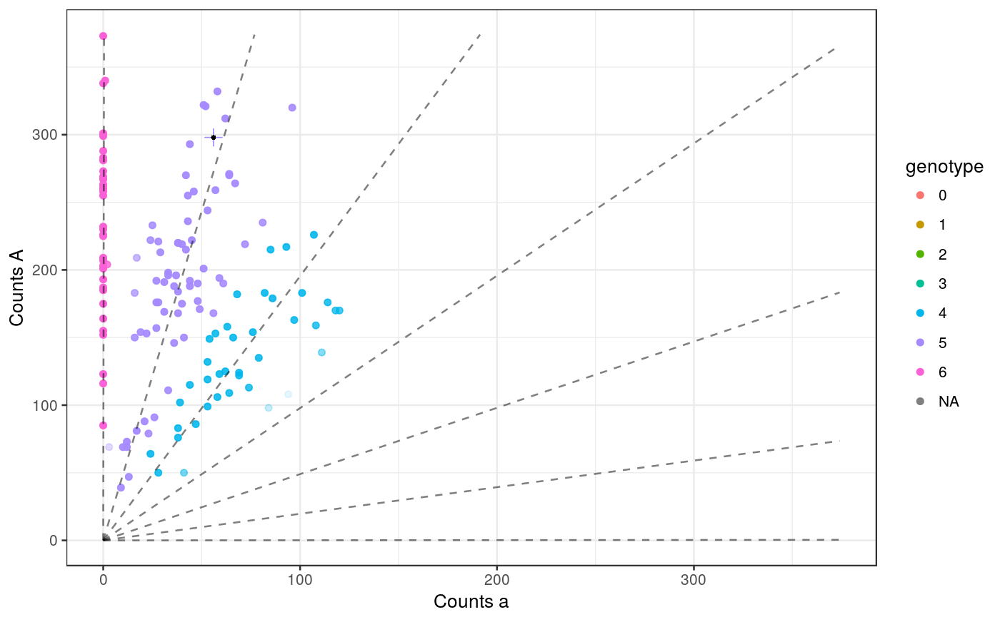

This function fits a hierarchical model to sequence counts from
a collection of siblings --- or a population of individuals
in Hardy-Weinberg equilibrium --- and returns genotyped information. The
hierarchy comes from either the fact that they share the same parents or they come
from a population in Hardy-Weinberg equilibrium. If
you also have parental sequencing data, then you can include this
to improve estimates. This is the simple version of updog with only a limited number of parameters.
To see the full list of options, see updog_vanilla.
updog(ocounts, osize, ploidy, model = c("f1", "s1", "hw", "uniform"), ...)
| ocounts | A vector of non-negative integers. The ith element is the number of reads of the reference allele in the ith child. |
|---|---|
| osize | A vector of positive integers. The ith element is the total number of reads for the ith child. |
| ploidy | A positive integer. The number of copies of the genome in the species. This is the assumed to be the same for all individuals. |
| model | The model for the genotype distribution. Do we assume an
F1 population ( |
| ... | Additional arguments to pass to |
A list of class updog with some or all of the following elements:
ogenoA vector. Each element of which is the maximum a posteriori estimate of each individual's genotype.
maxpostprobA vector. The maximum posterior probability of a genotype for each individual.
postmeanA vector. The posterior mean genotype for each individual.
bias_valThe estimated bias parameter. This is a value greater than 0 which is the ratio of the probability of correctly mapping a read containing the alternative allele to the probability of correctly mapping a read containing the reference allele. A value of 1 indicates no bias. A value less than one indicates bias towards the reference alelle. A value greater than 1 indiciates bias towards the alternative allele.
seq_errorThe estimated sequencing error rate. This is between 0 and 1.
od_paramThe estimated overdispersion parameter. Also known as the "intra-class correlation", this is the overdispersion parameter in the underlying beta of the beta-binomial distribution of the counts. Between 0 and 1, a value closer to 0 indicates less overdispersion and a value greater than 1 indicates greater overdispersion. In real data, we we typically see estimates between 0 and 0.01.
p1genoThe estimated genotype of one parent. The number of copies of the reference allele one of the parents has.
p1genoThe estimated genotype of the other parent. The number of copies of the reference allele the other parent has.
allele_freqThe estimated allele-frequency of the reference allele. This is the binomial proportion. Between 0 and 1, a value closer to 1 indicates a larger amount of reference alleles in the population.
out_propThe estimated proportion of points that are outliers.
out_meanThe estimated mean of the outlier distribution. The outlier distribution is beta-binomial.
out_dispThe estimated overdispersion parameter of the outlier distribution. This is the "intra-class correlation" parameter of the beta-binomial outlier distribution.
prob_outA vector. Each element of which is the posterior probability that a point is an outlier.
prob_okThe posterior probability that a point is a non-outlier.
p1_prob_outThe posterior probability that parent 1 is an outlier.
p2_prob_outThe posterior probability that parent 2 is an outlier.
num_iterThe number of iterations the optimization program was run.
convergence1 if we reached maxiter and 0 otherwise.
llikeThe final log-likelihood of the estimates.
hessianThe negative-Fisher information under the parameterization (s, ell, r), where s = log(bias_val) = log(d), ell = logit(seq_error) = logit(eps), and r = - logit(od_param) = - logit(tau). If you want standard errors for these parameters (in the described parameterization), simply take the negative inverse of the hessian.
inputA list with the input counts (ocounts), the input sizes (osize), input parental counts (p1counts and p2counts), input parental sizes (p2size and p1size), the ploidy (ploidy) and the model (model).
log_biasThe log of bias_val
logit_seq_errorThe logit of seq_error. I.e. log(seq_error / (1 - seq_error))
neg_logit_od_paramThe negative logit of od_param. I.e. log((1 - od_param) / od_param)
covmatThe observed Fisher information matrix of c(log_bias, logit_seq_error, neg_logit_od_param). This can be used as the covariance matrix of these estimates.
The key improvements in updog are its abilities to account for common features in
GBS data: sequencing error rate, read-mapping bias, overdispersion, and outlying points.
updog_vanilla for more parameter options.
plot.updog For plotting the results of updog.
summary.updog For some summary capabilities of updog.
## Read in data and format it for SNP1 ------------------------------------- data(snpdat) ploidy <- 6 snp1 <- snpdat[snpdat$snp == "SNP1", ] ocounts <- snp1$counts[-1] osize <- snp1$size[-1] pcounts <- snp1$counts[1] psize <- snp1$size[1] ## Fit updog --------------------------------------------------------------- ## Here, I don't update the parental genotype, but you should use the ## default setting, `update_pgeno = TRUE`, in practice. uout <- updog(ocounts = ocounts, osize = osize, p1counts = pcounts, p1size = psize, ploidy = 6, model = "s1", p1geno = 5, p2geno = 5, update_pgeno = FALSE) plot(uout)summary(uout)#> $genotypes #> #> 0 1 2 3 4 5 6 #> 0 0 0 0 39 66 37 #> #> $summ_prob #> maxpostprob prob_ok #> Min. 0.547 1 #> 1st Qu. 0.962 1 #> Median 0.998 1 #> Mean 0.949 1 #> 3rd Qu. 1.000 1 #> Max. 1.000 1 #> #> $gof_pvalue #> [1] 0.6837 #>